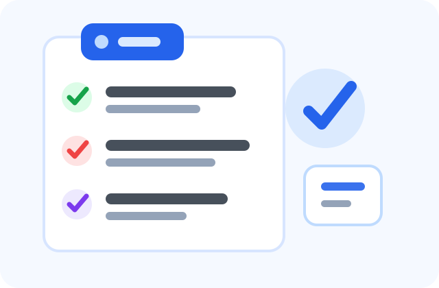

소상공인 · 마지막 확인일 2026-06-23
소상공인 디지털 전환 지원사업 신청 전 체크리스트
소상공인 디지털 전환 지원은 오프라인 중심으로 운영하던 점포가 온라인 판매, 예약, 주문, 홍보, 고객관리 도구를 도입할 수 있도록 돕는 사업입니다. 사업별로 지원 범위가 다르기 때문에 단순히 장비를 구매하기보다 매출 개선과 운영 효율화에 필요한 항목을 먼저 정리해야 합니다.

핵심 요약
- 온라인 판로, 스마트기기, 상세페이지, 마케팅, 교육 등이 지원 범위에 포함될 수 있습니다.
- 사업자등록과 정상 영업 여부, 소상공인 기준 충족 여부를 확인합니다.
- 공급업체 선정 방식과 자부담 여부는 공고별로 다릅니다.
- 신청 전 소상공인24의 현재 모집 공고를 확인해야 합니다.
신청 대상
대상은 소상공인 요건을 충족하는 사업자입니다. 음식점, 카페, 미용업, 생활서비스업, 도소매업처럼 고객 접점이 있는 업종에서 활용도가 높습니다. 다만 휴·폐업 상태이거나 제한 업종에 해당하는 경우, 세금 체납이 있는 경우에는 신청이 제한될 수 있습니다.
지원 내용
지원 항목은 온라인 쇼핑몰 입점, 배달·예약 시스템 도입, 스마트오더, 키오스크, 상세페이지 제작, 사진 촬영, 온라인 광고 컨설팅 등으로 나뉠 수 있습니다. 일부 사업은 직접 현금을 지급하기보다 지정된 수행기관을 통해 서비스를 제공하는 방식으로 운영됩니다.
신청 방법
- 소상공인24에서 디지털 전환 또는 판로 지원 관련 공고를 확인합니다.
- 사업자 정보, 매출 자료, 사업장 사진, 개선 계획을 준비합니다.
- 온라인 신청서에 현재 문제점과 지원 필요성을 구체적으로 작성합니다.
- 선정 후 협약, 교육, 수행기관 매칭 등의 절차를 진행합니다.
준비 서류
사업자등록증명, 매출 증빙, 국세·지방세 납세증명, 통신판매업 신고증, 사업장 임대차계약서 등이 요구될 수 있습니다. 온라인 판매를 준비하는 경우 상품 사진, 가격표, 기존 홍보 채널 현황을 정리해 두면 신청서 작성에 도움이 됩니다.
주의사항
지원금으로 모든 비용이 해결된다고 보기 어렵습니다. 자부담, 부가세 부담, 사후 정산 방식이 있을 수 있으므로 계약 전 비용 구조를 확인해야 합니다. 수행기관이 먼저 결제를 요구하거나 공식 절차 밖에서 대행 수수료를 요구하는 경우에는 공고 담당기관에 확인하세요.